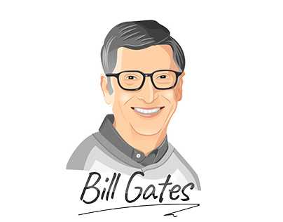
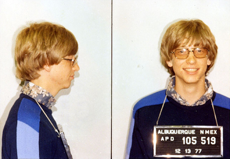

Bill Gates
wie is Bill Gates?
Bill Gates is een Amerikaanse ondernemer en filantroop. Hij is bekend geworden omdat
hij het bedrijf Microsoft heeft opgericht en omdat hij nog een aandeel heeft in Microsoft
is hij ook een van de rijkste mensen. Hij was zelfs van 1996 tot 2007 de
rijkste man ter wereld.
de geschiedenis van Bill Gates
Bill was geboren op 28 oktober 1955 in Seattle. Daar ging hij ook naar school (de Lakeside prep school). In 1986 zag hij daar een computer met een terminal, daar begon zijn passie voor programmeren en computers. Met zijn vriend en toekomstige zakenpartner Paul Allen zat hij zo vaak mogelijk achter de computer. Zo hebben ze een systeem gehackt dat de verbruikte computertijd bijhield, het bedrijf van het systeem daar achter kwam besloten ze hun in dienst te nemen in ruil voor onbeperkte computertijd. Daarna ging hij studeren in Harvard-universiteit totdat hij hoorde over de Altair-8800 (een zelfbouw computer). Hij stopte toen met school om een computersoftware te bouwen met Paul Allen voor de Altair. Hij werkte daar dag en nacht aan en toen het af was liet hij het zien aan het bedrijf dat de Altair had gemaakt. Het bedrijf heeft het programma gekocht en zo is Microsoft geboren.
wat doet hij nu?
Bill is sinds dien veel bezig geweest met Microsoft en programmeren tot 27 juni 2008, dat was zijn laatste
werkdag bij Microsoft. Hij bleef nog wel adviseur en voorzitter van Microsoft tot maart 2020. Sinds dien houd
hij zich alleen maar bezig om het leven
voor mensen die het moeilijk hebben beter te maken. Zo heeft hij veel
geld geïnvesteerd in het covid-19 vaccin. Hij is ook veel bezig met het verbeteren van de leefomgeving
in Afrika. Dat doet hij bijvoorbeeld door te investeren in wc’s die ontlasting
omzetten in energie zodat
er meer stroom is. Dat is hard nodig in Afrika omdat er weinig stroom is en hele slecht hygiëne waardoor
er veel mensen sterven aan diarree. Hij heeft ook miljoenen gestopt in de globalseedvault, en hij heeft
verklaart dat
hij wilt dat al zijn geld aan liefdadigheid word gegeven en dus niet aan zijn kinderen.